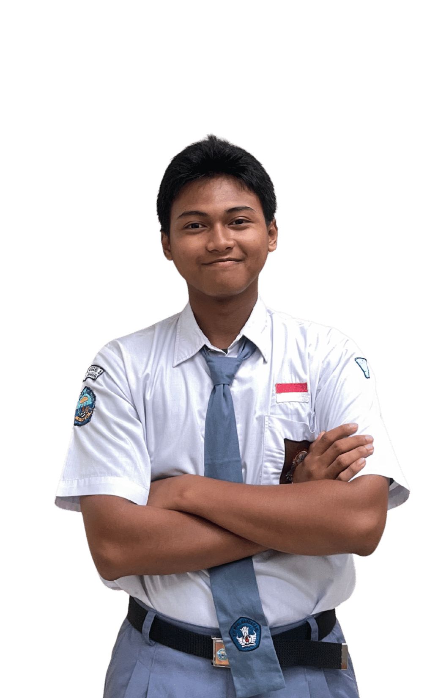
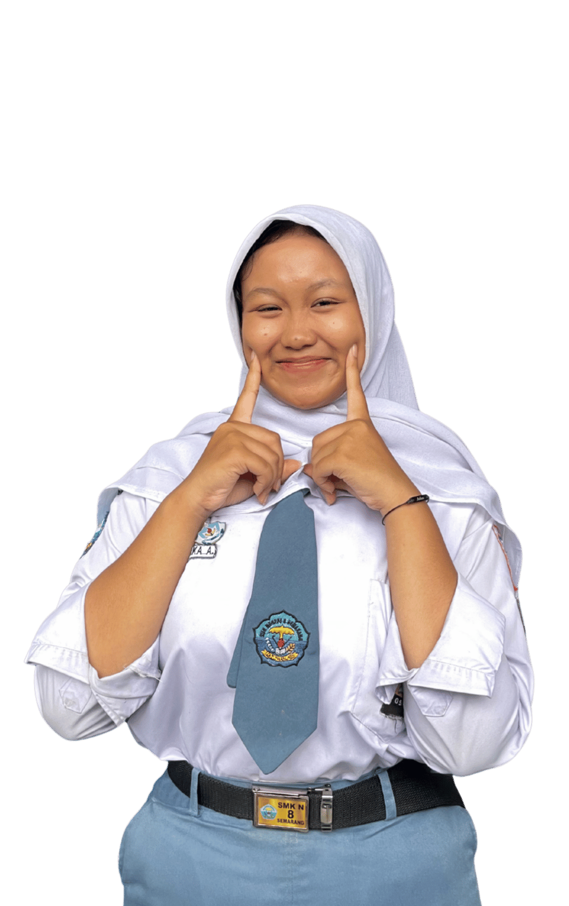
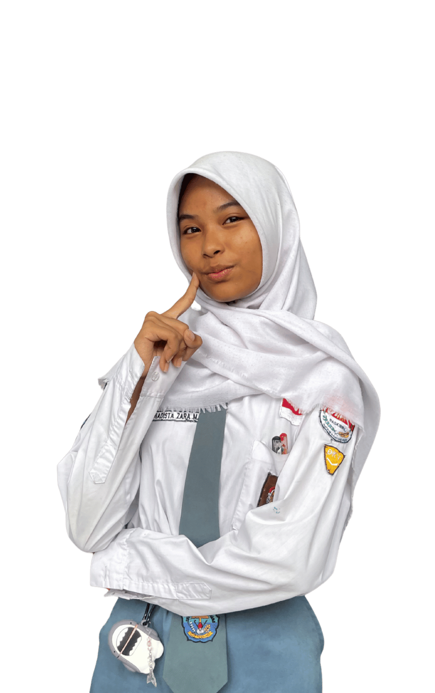
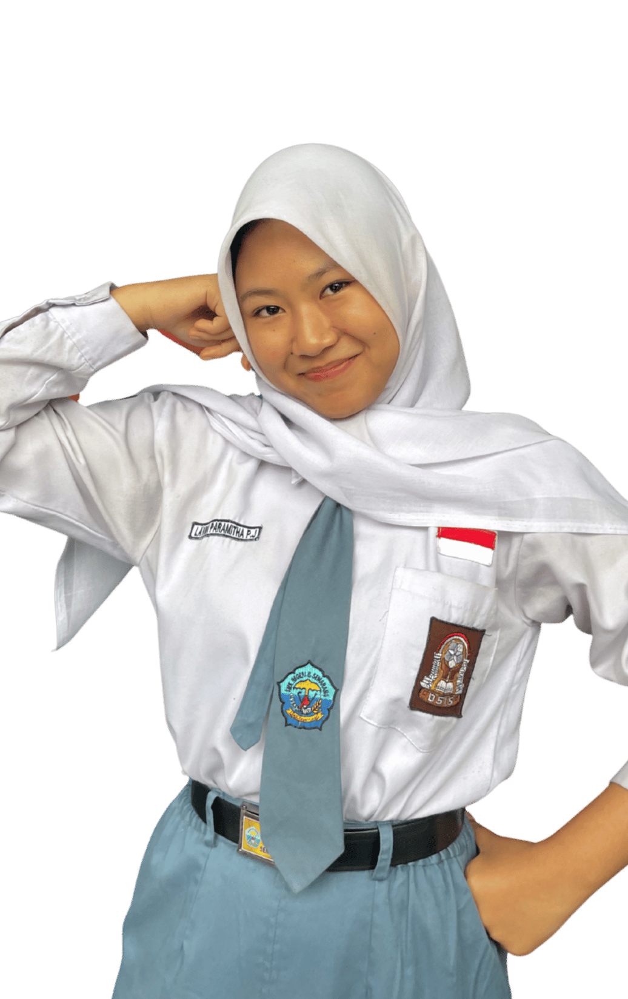

BADAN PENGURUS HARIAN

Rafif Firza Putra
XI PPLG 2
Ketua
"Hidup bukan untuk menunjukkan seberapa benar dirimu, tapi membuktikan seberapa berguna dirimu"
Aurello Valent Al Hakim
XI PPLG 2
Sekretaris 1
“Work hard in silence. Let your success be your noise”

Laily Azkia Artikaningrum
XI DKV 3
Bendahara 1
“Jangan biarkan rasa takut menghentikan mimpi besar”
Sarah Amaura Indriatmoko
X DKV 3
Wakil Ketua
“Live fast, stay raw, let them talk later”

Hadista Zara Melani
X DKV 3
Sekretaris 2
“Jika orang lain bisa, maka aku juga bisa”

Lavina Paramitha Putri Johandy
X LK 2
Bendahara 2
“If you can't see anything beautiful in your self, get a better mirror”
PROGRAM KERJA
Eksis (Edukasi OSIS)
Study Banding
Menyetel musik saat waktu break time
Pembuatan dan publikasi konten prestasi siswa
Pelaksanaan program
EcoBreak
Menerapkan budaya
5S
(Senyum, Salam, Sapa, Sopan, Santun)
Membantu pelaksanaan program kerja setiap Sekbid
Menerapkan
PLH
satu bulan sekali pada minggu terakhir serta melaksanakan kegiatan senam
Pertemuan seluruh organisasi sekolah
Pelaksanaan podcast OSIS